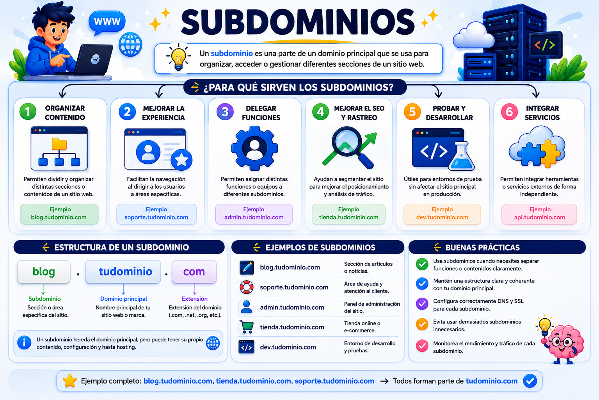
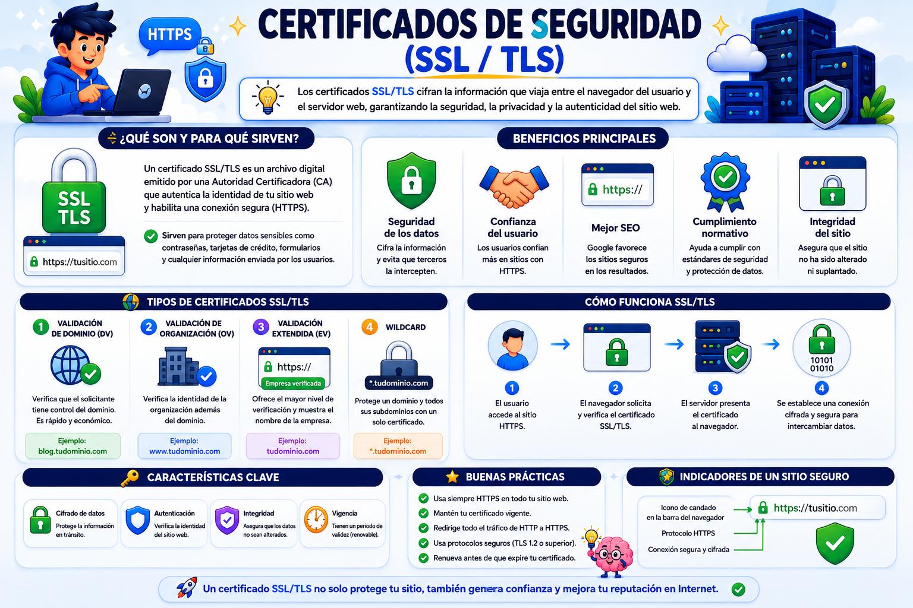
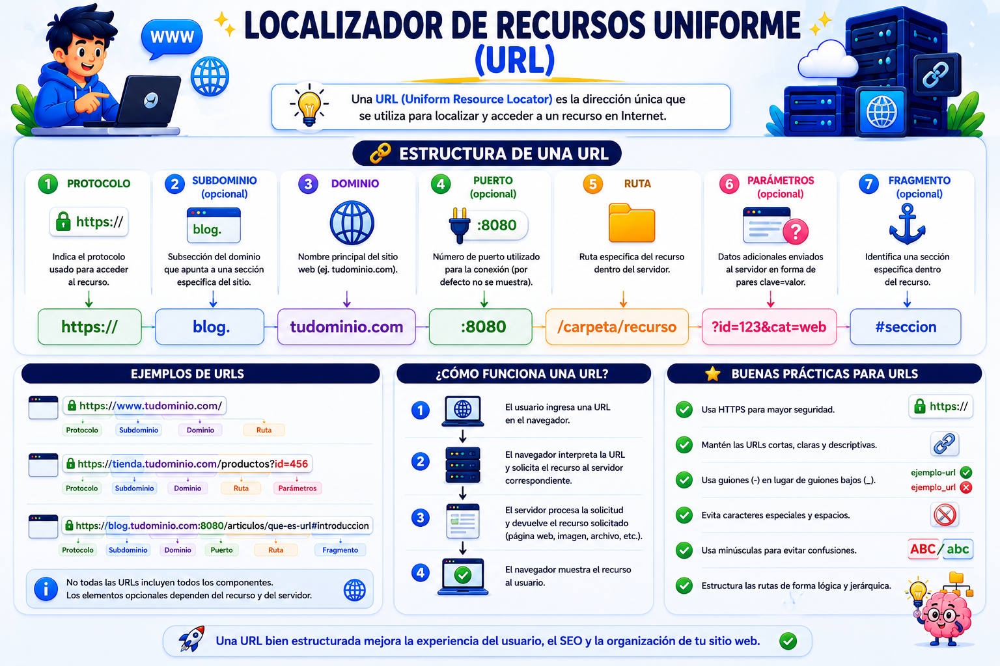

Tema V
Un dominio web es el nombre único y exclusivo que se le asigna a un sitio web en Internet para que cualquier persona pueda visitarlo fácilmente (por ejemplo, google.com o pulse.com).Su función clave se resume en dos puntos:
Traductor amigable: Los servidores web se identifican mediante números complejos llamados direcciones IP (como 192.168.1.100). El dominio traduce esos números a palabras fáciles de recordar para los humanos.
Estructura básica: Se compone del nombre del sitio (wikipedia) y la extensión o terminación (.org o .com), la cual ayuda a identificar el tipo de página o el país de origen del sitio web.
¿QUÉ SON?
Son extensiones o divisiones lógicas que se crean a la izquierda del dominio principal para ramificar u organizar secciones independientes de un proyecto web, sin necesidad de comprar un dominio nuevo.
Ejemplo: Si tu dominio es miempresa.com, puedes estructurar:
://miempresa.com (Para el comercio electrónico).
://miempresa.com (Para artículos).
://miempresa.com (Para una plataforma educativa).

Protocolos criptográficos que establecen un canal de comunicación cifrado y seguro entre el navegador del usuario y el servidor web.
Función: Protegen los datos sensibles en tránsito (contraseñas, tarjetas de crédito) contra ataques de intercepción (Man-in-the-Middle).
Indicadores visuales: Activan el prefijo HTTPS en la URL y muestran el icono del candado de seguridad en la barra de direcciones.
Proveedores: Existen entidades emisoras comerciales (DigiCert, Sectigo) y soluciones completamente gratuitas y automatizadas de código abierto como Let's Encrypt.

Es la dirección específica y estructurada que se utiliza para localizar un recurso exacto (una página, una imagen, un video) en internet.
Protocolo: Indica el método de comunicación empleado (http, https, ftp).
Dominio/Host: Especifica el servidor al que se está llamando (incluye subdominios).
Puerto: El canal de red específico (por defecto, :80 para HTTP y :443 para HTTPS; suele omitirse en la navegación regular).
Ruta (Path): La ruta lógica de directorios dentro del servidor hasta el archivo físico (/productos/index.php).
Parámetros/Query String: Cadena de datos enviada al script del servidor para filtrar u operar información (?id=45).
